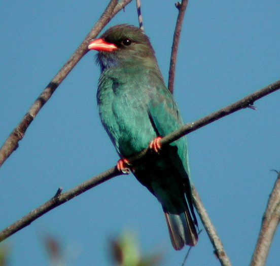

ओरिएंटल डॉलरबर्डOriental Dollarbird
Eurystomus orientalis · Coraciidae · BRD-0368

- Scientific name वैज्ञानिक नाम
- Eurystomus orientalis (Linnaeus, 1766)
- Family कुल
- Coraciidae
- Hindi हिंदी
- ओरिएंटल डॉलरबर्ड
- Local names स्थानीय नाम
- broad-billed roller, dollarbird, oriental dollarbird
- Status here यहाँ की स्थिति
- native
- Movement आवागमन
- Migrant
- Known from कहाँ दर्ज
- Others have published records from the wider Awadh–Purvanchal plain, none yet from Basti–Ayodhya अवध–पूर्वांचल से दूसरों के प्रकाशित अभिलेख, बस्ती–अयोध्या से अभी नहीं
- IUCN IUCN
- LC
- Review समीक्षा
- not yet reviewed
When to look कब देखें
Migrant प्रवासी. Expected mainly in April, May, June, October, December. मुख्यतः अप्रैल, मई, जून, अक्टूबर, दिसंबर में अपेक्षित।
Breeds along the foot-hills of the Himalayas to Eastern Assam (Baker 1927). GBIF records in northern Uttar Pradesh fall in April, May, June, October, and December. All migrants and visitors →
Tell it apart from इनसे अलग पहचानें
ओरिएंटल डॉलरबर्ड / Oriental Dollarbird
Eurystomus orientalis (Linnaeus, 1766) — Coraciidae
ओरिएंटल डॉलरबर्ड — घने जंगलों और वन सीमाओं पर रहने वाला एक भारी, गहरे हरे-भूरे रंग का विशिष्ट नीलकंठ पक्षी। बेकर (1927) के अनुसार इसकी चोंच और पैर गहरे सिंदूरी-लाल होते हैं, सिर गहरा भूरा और पीठ गहरे हरे रंग की होती है। उड़ते समय इसके डैनों पर हल्के नीले रंग की चौड़ी पट्टी दिखती है। यह शाम के समय ऊंचे पेड़ों पर बैठकर टिड्डे, सिकाडा और भृंग पकड़ता है।
Quick Identification त्वरित पहचान
| Feature | Description |
|---|---|
| Habit | Stocky forest roller perching high on bare canopy branches and dead trees |
| Bill & Feet | Heavy, broad bill deep vermilion with blackish tip; legs and feet vermilion (Baker 1927, p. 229) |
| Wing Patch | Outer primaries black, "with a broad pale blue band near the base" (Baker 1927, p. 229) |
| Head & Mantle | Top and sides of head dark brown; mantle dull dark greenish-brown turning brighter on rump (Baker 1927, p. 228) |
| Throat & Breast | Center of chin and throat deep purple-blue with smalt-blue shaft-stripes; breast brownish-green (Baker 1927, p. 229) |
| Soft Parts | Iris dark brown to crimson-brown; gape orange or bright vermilion (Baker 1927, p. 229) |
Field tip: Look for a stout forest roller with a deep vermilion bill perching motionlessly on the highest branch of a dead tree in a forest clearing, (Baker 1927, pp. 229–230); in flight it shows a broad pale blue band near the base of the outer primaries (p. 229).
हिंदी:
सिंदूरी-लाल चौड़ी चोंच, गहरा हरा-भूरा शरीर और उड़ान में पंखों पर दिखने वाला हल्की नीली चौड़ी पट्टी देखकर इसे पहचाना जाता है (बेकर 1927)।
Morphology आकारिकी
Measurements as given by Baker (1927) for Eurystomus orientalis orientalis:
| Measurement | Range |
|---|---|
| Biometrics | Wing 178 to 202 mm. ; tail 93 to 107 mm. ; tarsus 19 to 20 mm. ; culmen 23 to 26 mm. (Baker 1927) |
Stuart Baker (1927, pp. 228–229) described the plumage: "Top and sides of head and neck dark brown, tinged with olive in varying degree and blackish on the forehead, lores and cheeks ; back dull dark greenish-brown, becoming brighter and greener on lower back, rump and upper tail-coverts... primary-coverts black glossed with blue; outer primaries black, with a broad pale blue band near the base ; in some birds this band shows pale and blue on both webs... centre of chin, throat and fore-neck deep purple-blue, with shaft-stripes of smalt-blue ; sides of chin, throat, neck and whole breast dull brownish-green, changing to pale, brighter bluish-green on the abdomen and under tail-coverts".
Colours of soft parts: iris dark brown to crimson-brown; bill deep vermilion, the tip blackish, gape orange or bright vermilion; legs and feet vermilion (Baker 1927, p. 229).
हिंदी:
बेकर (1927) के अनुसार इसके डैने 178 से 202 मिमी, पूंछ 93 से 107 मिमी, टार्सस 19 से 20 मिमी और चोंच 23 से 26 मिमी होती है। चोंच और पैर गहरे सिंदूरी लाल होते हैं।
Behaviour & Ecology व्यवहार और पारिस्थितिकी
Stuart Baker (1927, p. 230) noted: "The Broad-billed Roller is entirely a forest bird wherever found, although it may prefer the more open parts or small patches of cultivation in the midst of forest. It is a much quieter bird than those of the genus Coracias and much more crepuscular in its habits."
Baker (1927, p. 230) observed: "All through the hotter hours of the day it may be seen perched quietly high up on the loftiest tree of that particular bit of forest, or on the topmost branch of a dead tree in a clearing. As it sits motionless, its head sunk into the puffed-out feathers of its shoulder and breast, it seems to be fast asleep except for a harsh croak, uttered every quarter of an hour or so."
हिंदी:
बेकर (1927) के अनुसार यह वनों का शांत पक्षी है जो शाम के समय अधिक सक्रिय होता है। दिन की गर्मी में यह ऊंचे सूखे पेड़ों पर चुपचाप बैठा रहता है और बीच-बीच में भारी आवाज निकालता है।
Life Cycle / Phenology जीवन चक्र
Baker (1927, p. 230) recorded the nidification: "The Broad-billed Roller is essentially a forest breeder, though its favourite site is high up in some dead tree in a rice patch on a hill-top surrounded with virgin forest. Next to this it prefers one of the mighty Bombax-trees... No nest is made, the eggs being deposited on the bare dead wood... The eggs number three or four". Breeding over its range occurs between March and May (Baker 1927, p. 230).
In Uttar Pradesh, published records are seasonal occurrences from the Terai forest belt in April–June, October, and December.
हिंदी:
बेकर (1927) के अनुसार यह ऊंचे सेमल या सूखे पेड़ों के कोटरों में बिना घोंसला बनाए लकड़ी पर तीन या चार अंडे देता है। उत्तर प्रदेश के तराई में इसके रिकॉर्ड अप्रैल से जून, अक्टूबर और दिसंबर में हैं।
Host Plants or Prey आहार
Stuart Baker (1927, p. 230) recorded the diet: "Their food has been said to consist principally of wood-boring beetles etc. but I have found it to be mainly grasshoppers, mantidae and cicadas."
हिंदी:
बेकर (1927) के अनुसार इसका भोजन मुख्य रूप से टिड्डे, बद्धहस्त कीट (मैंटिस) और सिकाडा हैं।
Predators / Natural Enemies शत्रु
No source opened for this atlas names a specific predator of this bird.
हिंदी:
इस एटलस के लिए खोले गए किसी भी स्रोत में इस पक्षी के किसी विशिष्ट शिकारी का उल्लेख नहीं है।
Agricultural / Human Relevance कृषि प्रासंगिकता
By capturing grasshoppers, beetles, and cicadas in forest clearings, it plays a role in canopy insect regulation. Protected under the Wildlife (Protection) Act, 1972.
हिंदी:
वन सीमाओं पर बड़े कीटों और भृंगों का शिकार कर यह पारिस्थितिक संतुलन बनाए रखता है। यह वन्यजीव (संरक्षण) अधिनियम, 1972 के तहत संरक्षित है।
Expected Locally स्थानीय रूप से अपेक्षित
Not a field record. Written from published accounts for eastern Uttar Pradesh. No confirmed local sighting yet — if you have seen it, that is what the atlas needs.
अभी तक स्थानीय पुष्टि नहीं। यह विवरण प्रकाशित स्रोतों से है, किसी अवलोकन से नहीं।
GBIF holds published records from the wider Awadh–Purvanchal plain, none yet from Basti–Ayodhya.
Published records from the northern forest tracts of the state come from Lakhimpur Kheri (four records), Maharajganj (three records), and Balrampur (one record), reported by ten observers between 2019 and 2022 during April–June, October, and December.
A first record would be a photograph with place and date, sent through the About page.
Distribution वितरण
Global range: Baker (1927, p. 229) gave the distribution: "Foot-hills of Himalayas from Human to extreme Eastern Assam and Eastern Bengal, all Burma, Malay Peninsula to Java, Sumatra, Borneo, the Philippines, Celebes and numerous other islands, Siam, Yunnan, Indo-Burmese countries, Indo-China, East to Manchuria, and Eastern China."
In India: Baker (1927, p. 229) recorded: "Foot-hills of Himalayas from Human to extreme Eastern Assam and Eastern Bengal... In India it also occurs in the hills and adjacent plains of the West coast from Travancore North to the Wynaad and in Ceylon."
In Uttar Pradesh: Occurrences are documented along the sub-Himalayan Terai forest belt in Lakhimpur Kheri, Balrampur, and Maharajganj. GBIF holds no published record from Basti or Ayodhya.
In Basti district / eastern UP: GBIF holds no record from Basti or Ayodhya; the nearest are in Lakhimpur Kheri, Balrampur, and Maharajganj.
हिंदी:
बेकर (1927) के अनुसार इसका विस्तार हिमालय की तलहटी से लेकर असम और दक्षिण-पूर्व एशिया तक है। उत्तर प्रदेश में इसके रिकॉर्ड लखीमपुर खीरी, बलरामपुर और महाराजगंज के वन क्षेत्रों से हैं।
Research Questions शोध प्रश्न
- Which emergent tree species (such as Bombax ceiba) provide indispensable hunting snags for Oriental Dollarbirds in Maharajganj forest tracts? / महाराजगंज के जंगलों में सेमल जैसे कौन से ऊंचे पेड़ इसके शिकार के लिए आवश्यक मंच प्रदान करते हैं?
- Does the Oriental Dollarbird establish breeding territories within the sal forest clearings of the northern Terai belt? / क्या यह तराई के साल वनों के खुले हिस्सों में प्रजनन क्षेत्र स्थापित करता है?
- What is the peak twilight flight activity window for dollarbirds hunting swarming insects over northern Uttar Pradesh rivers?
- How do territorial interactions manifest between the Oriental Dollarbird and resident Indian Rollers along forest margins?
- Can local village naturalists spot the circular pale blue wing disks of this bird during late evening flights? (An observer watching tall dead trees against the twilight sky can readily note the wing coins.)
Similar Species मिलती-जुलती प्रजातियाँ
| Species | How to tell apart | हिंदी | |
|---|---|---|---|
| [[indian_roller | Indian Roller]] (Coracias benghalensis) | Slender build, black bill, lilac-streaked breast, greenish-blue crown and rump, lack of circular flight patch (Baker 1927, p. 224) | नीलकंठ |
| [[european_roller | European Roller]] (Coracias garrulus) | Light cinnamon-rufous back, pastel turquoise head and underparts, black bill, longer tail (Baker 1927, p. 223) | यूरोपियन रोलर |
Field rule: The stout dark build, wide vermilion-red bill and legs, and broad pale blue band near the base of the outer primaries distinguish the Oriental Dollarbird (Baker 1927, p. 229).
हिंदी:
देशी नीलकंठ की चोंच काली और सीना धारीदार होता है; यूरोपियन रोलर की पीठ बादामी होती है; ओरिएंटल डॉलरबर्ड की चोंच सिंदूरी लाल और उड़ते समय डैनों पर हल्की नीली चौड़ी पट्टी दिखती है।
Taxonomy & Classification वर्गीकरण
Original description. Described by Carl Linnaeus in 1766 in Systema Naturae (12th ed., Vol. 1, p. 159), under the basionym Coracias orientalis, with the type locality given as India (subsequently restricted to Java by Stresemann).
Subspecies. Stuart Baker (1927, pp. 228–230) treated the continental Indian population under the nominate subspecies Eurystomus orientalis orientalis, giving the range as "Foot-hills of Himalayas from Human to extreme Eastern Assam".
Family and order placement. Order Coraciiformes, family Coraciidae (rollers), genus Eurystomus.
IUCN status rationale. Evaluated as Least Concern (LC) on the IUCN Red List (BirdLife International 2016).
हिंदी:
लिनिअस ने 1766 में इसका वर्णन किया था। यह कोरासिइडी कुल के यूरीस्टोमस वंश का सदस्य है और प्रकृति संरक्षण संघ की रेड लिस्ट में संकट-मुक्त (LC) है।
Photo Gallery फोटो गैलरी
No photos yet — add field photos to media/species/oriental_dollarbird/ and run node scripts/sync_photos.js.
Photos needed आवश्यक फोटो
- [ ] Adult perched on a dead canopy branch showing vermilion bill and feet (सूखी डाल पर बैठा वयस्क पक्षी जिसमें सिंदूरी चोंच और पैर दिखें)
- [ ] Underwing view in flight showing the pale blue circular 'dollar' patches (उड़ान में नीचे से दृश्य जिसमें पंखों पर नीला गोल धब्बा दिखे)
References संदर्भ
- Linnaeus, C. (1766). Systema Naturae per Regna Tria Naturae. 12th ed. Vol. 1. Laurentii Salvii, Holmiae, p. 159 (as Coracias orientalis).
- Baker, E. C. S. (1927). The Fauna of British India, Including Ceylon and Burma. Birds. Vol. 4. 2nd ed. Taylor & Francis, London, pp. 228–230 (as Eurystomus orientalis orientalis).
- Ali, S. & Ripley, S. D. (1987). Compact Handbook of the Birds of India and Pakistan. 2nd ed. Oxford University Press, New Delhi.
- Grimmett, R., Inskipp, C. & Inskipp, T. (2011). Birds of the Indian Subcontinent. 2nd ed. Christopher Helm, London.
- Rasmussen, P. C. & Anderton, J. C. (2012). Birds of South Asia: The Ripley Guide. 2nd ed. Smithsonian Institution and Lynx Edicions, Washington, D.C. and Barcelona.
- BirdLife International (2016). Eurystomus orientalis. The IUCN Red List of Threatened Species 2016: e.T22682920A92968881. doi:10.2305/IUCN.UK.2016-3.RLTS.T22682920A92968881.en
- GBIF Occurrence Data — Eurystomus orientalis, India (2025).
Source file: species/fauna/birds/oriental_dollarbird.md